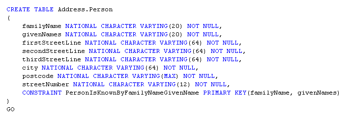
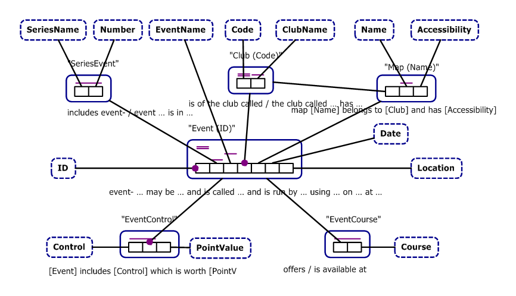

Copyright (c) 2007 Clifford Heath.
This links to a number of example ORM2 model files in various representations:
The models are as follows. ORM2 terminology is italicised on first use.
This very simple model shows a basic example of the features of ORM2 you'll be seeing most often, so I'll use it to introduce the features of the ORM2 visual language.

This model shows a ternary (which represents a student's participation in a school-sanctioned activity). The Participation ternary has a UC spanning two roles (which says that a given Student may only participate in a given Activity for a single School). But there are two occurrences of a new symbol, subset constraints. These constraints specify restrictions on the allowed fact population of the ternary fact type. The UC doesn't specify which school a student may represent for an activity. The student is enrolled in exactly one school, and the set of (School, Student) pairs is a superset of the (School, Student) pair inside the ternary. In simple terms, this requires that each student who participates in some activity may only do so as a representative of the school in which they're enrolled, and not for any other school. Furthermore, the upper subset constraint requires that such participation may only occur for an activity that is sanctioned by that school. The direction of the subset arrow is consistent with the arrows used in sub-typing, as shown in the next case.

This example introduces many of the remaining features of ORM2, and shows one way to handle a particular thorny problem. The most obvious new features are the subtype relationships, which show respectively that a Person may be an Employee, and may be a Manager, and if a Manager, also a CEO. There is no implicit exclusion between the two; a manager may also be an employee. Any required constraints of this type may be added, joining to the subtype connectors. Logically, there is a binary subtyping fact type to which these constraints would attach.
The manages/managed by fact type between employee and manager is mandatory for each manager (a manager must have subordinates), but not for employee - because the CEO is an employee who has no manager.
Here we see a unary fact type called is CEO, which corresponds to a boolean condition on the player (a manager). An external exclusive-or constraint joins this role and the employee's role in "managed by". This constraint requires that each employee must either be CEO or be managed by some manager, but not both. Note that the exclusive-or symbol consists of a heavy dot, like the mandatory dot, indicating the mandatory aspect, and an X, symbolising "not both". ORM2 also allows external mandatory constraints (or inclusive-or constraints) shown like this but without the X, and external exclusion constraints which have the X but not the heavy dot.
The final new feature of this model is a ring constraint, of which there are eleven types. This one is an acyclic constraint, which says that no manager may be self-managed, nor may they be managed by any direct or indirect subordinate.
 This example is more a curiosity than anything else, serving to illustrate a case
that you might not otherwise think was possible. Person may play a unary role in
the fact type "is dead". If they are in fact dead, we might wish to
record some facts about the event of their death, so we nest (objectify) the
"is dead" fact type as a new entity, Death. This allows us to
associate their death with a value indicating the cause of death. The uniqueness
constraint requires that we record only one cause of death.
This example is more a curiosity than anything else, serving to illustrate a case
that you might not otherwise think was possible. Person may play a unary role in
the fact type "is dead". If they are in fact dead, we might wish to
record some facts about the event of their death, so we nest (objectify) the
"is dead" fact type as a new entity, Death. This allows us to
associate their death with a value indicating the cause of death. The uniqueness
constraint requires that we record only one cause of death.

By now you're asking how all this mess of detail is going to be turned into a usable database design. Before moving on to a larger real-life example, let's cover the concept of absorption into a relational, or compound schema. Note that the absorption process requires all the entity types, fact types, and constraints for the model. Adding a single fact type or changing a constraint might require that some features are represented in new tables, or different ones, and these changes can cascade, so that a small change in the conceptual model requires a large database migration. Don't worry about that for now, as there are ways of minimizing the impact, and in the future the migration process will be fully automatic, and larger impacts may perhaps even be delayed without delaying the incremental schema change.
Before launching in, we see an external uniqueness constraint here for the first time. it joins the roles of FamilyName and GivenName; this schema will never allow two people to have the same two names. Normally, an external UC has a single line through the middle of the circle, consistent with the single line above covered roles in an internal UC, but this one is also a preferred identifier (for Person, obviously), so it has a double line. A double line is also used when showing a internal UC that's a PI.
Ok, here goes. How is it that the SQL for this whole detailed diagram requires only the table shown (and a similar one for Company)? You can see that Street has exactly three StreetLine values allowed, and is identified by the combination, so here we can absorb these fact roles into a Street entity, which would be shown as an objectified type Street having three fact roles, one for each street line. The same principle applies again to Address, except here it absorbs StreetNumber, City, Postcode and all three roles of the Street nested type. The same process continues with Person, which is finally absorbed to the single table you see shown in the SQL code. Note how the respective role names are appended to form column names like streetLine1.
Note also that this table doesn't enforce the uniqueness constraint requiring that each Address occurs once only. Each Address is identified by its roles, but more than one person may live at the same address. Enforcement of the uniqueness constraints are unnecessary however. Just consider the absorbed Address roles as forming a multi-part foreign key to a table that's not needed. If someone wants the unique list of all addresses, it's possible to write an SQL projection to compute that set.
It's also possible to mark Address as an independent entity type, which is an instruction to the absorption process that indicates that this entity might exist apart from any roles it might play. Independent entity types are shown in ORM2 as having an exclamation point ! after their name. In order to represent an independent entity type in SQL, a separate table is always needed, and this can be used to enforce uniqueness. In this case however, Person would have a large multi-part foreign key into the new Address table, so it's preferable to introduce a surrogate key in the form of a database-allocated unique integer into the address entity, and mark that key as the preferred identifier instead. Note that this is not a detail of the conceptual model, but is merely a pragmatic concern which should not need to be shown; instead the absorption process should apply rules that require it to introduce such a surrogate key. Unfortunately this feature is not yet present in NORMA.
Finally, a working three-part model of a system for the sport of Orienteering. The three parts cover administration, registration and scoring respectively, which also happens to map areas of interest to folk in different roles. Any feature may show on more than one diagram, and the ORM2 rules don't indicate that such an element has a special affinity with any diagram on which it appears. Entities that appear on other diagrams are shown with a drop-shadow. The diagrams are presented without much comment, and after that, the absorbed (compound) form is shown as an entity-relationship diagram.

Also here you'll see an external mandatory constraint shown for the first time. This one requires that an event is either part of a series, or has a name, or both. If and only if the event is part of a series, it must also have a number in that series - this is shown by the equality constraint, a circle with an = sign in it.
Finally there is a number of cases throughout this model where a surrogate
key is used. In a pure conceptual modelling tool these should be only be used
where they will be meaningful to the end-user of the system, but in practise
it can be difficult to find a natural identification scheme, so surrogate
identifiers are used more widely.
In addition to that, this resultant model is to be used with Ruby on Rails,
whose ActiveRecord module has a strong preference for surrogate keys on every
table.

The new feature here is an external x-or constraint on two subtype connectors, indicating that an Entrant must be either a Team or a Competitor, but not both. The subset constraint requires that a competitor may only be entered as a team member if their team is already entered for that same event course.

This model also shows the resultant
score for a given Entrant's Entry to a given Event. Normally this
value will be computed from the times of their visits to punches
during the event, and according to a scoring method as advised.
However in this case we cannot record the complexities of all
possible scoring algorithms, nor the discretion of the judges in
possibly adjusting scores, and we don't require that Visit information
necessarily be recorded in any case. Either there may be no
electronic recording of visits, or the score might depend only on
finishing order, and a provisional score awarded to be checked
against valid Visit data at a later time.
This is the final schema as computed by NORMA, though from an older version of the model that had Team entrants. It still serves to give you a flavour of the relational mapping process.


This diagram was produced in NORMA, but it is not elementary, rather it's a representation of just the administration part of the relational schema. I've turned off the red ink that NORMA displays when it detects non-elementary schemas. When the ActiveFacts project extracts the schema from a relational database, or one that's been absorbed into compound (relational) form, this is how it might look in ORM notation.